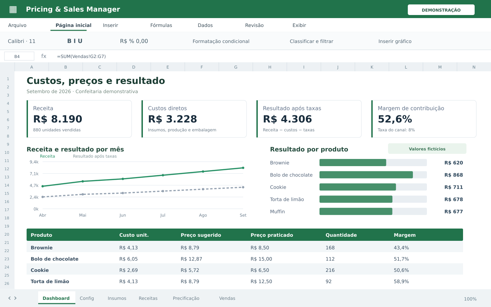

Custos, preços e margem
Custos que conversam com as vendas.
Uma planilha demonstrativa que conecta insumos, receitas, formação de preços e vendas.

O problema
O que precisa mudar?
Quando custo, preço e vendas vivem em arquivos separados, torna-se difícil entender a margem de cada produto e canal.
A solução
O que foi construído.
Uma planilha demonstrativa com seis abas conectadas, fórmulas de custos e precificação, registro de vendas e dashboard. Um protótipo Python lê e valida sua estrutura.
Como funciona.
Calcular
Insumos e rendimento definem o custo unitário.
Precificar
Margem e taxas do canal orientam a formação do preço.
Analisar
As vendas alimentam indicadores de receita, custo e lucro.
O que foi desenvolvido.
- Cadastro de insumos e unidades
- Receitas e custo por lote
- Margem-alvo e taxas por canal
- Preço sugerido e praticado
- Vendas e dashboard integrado
- Leitura e validação em Python
Conheça a tecnologia do projeto
A engenharia por trás.
A planilha é o artefato mais maduro: Config, Ingredients, Recipes, Pricing, Sales e Dashboard. O código Python corresponde à primeira etapa de validação e leitura, não a um sistema web completo.
Excel · Fórmulas · Python
Referências do projeto: README.md · main.py · demo/small-business-pricing-manager-demo.xlsx.
O estágio atual. O próximo passo.
A demo utiliza produtos, canais e valores fictícios. Não expõe dados da operação que inspirou o projeto. Os números da planilha são exemplos, não resultados comerciais da MATRIZ.
Possibilidades de evolução
Automatizar importações de compras e vendas ou migrar o modelo para uma aplicação com usuários e banco central.
Próximo projeto
Sales IntelligenceVamos conversar
Seu negócio tem uma história.
Vamos construir o próximo capítulo.
Conte sua ideia ou o que está dificultando a rotina. A gente ajuda a definir por onde começar.
Primeiro, entendemos. Depois, propomos.